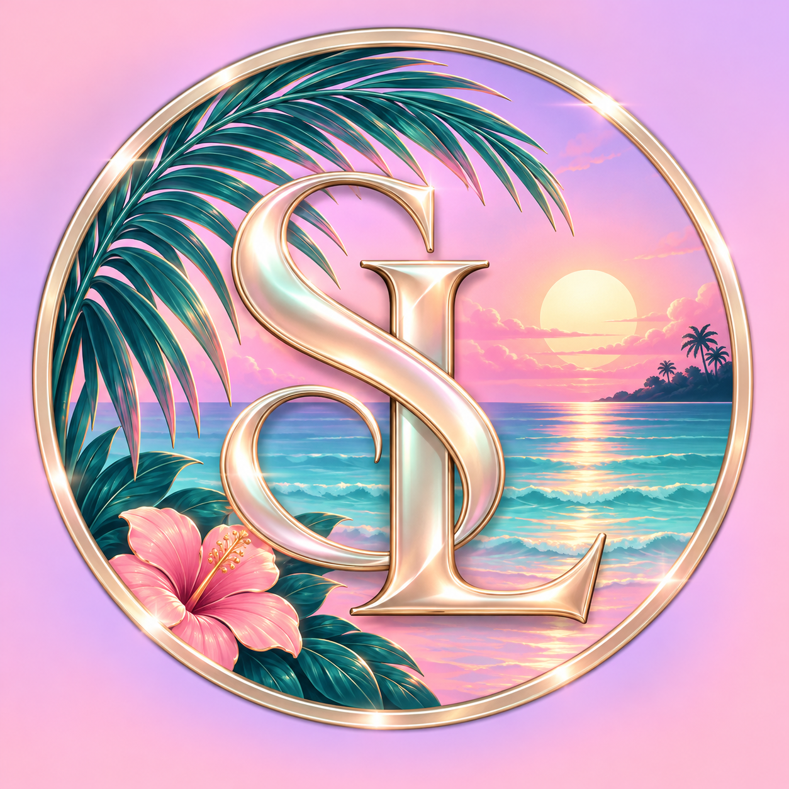

SACRED / A WORLD OF YOUR OWN
Sunshine & Soft Life
A little sunshine, a little luxury, and a world of your own. ✨ Welcome to my corner of the internet, where cozy moments, captivating content, and the Sacred community come together. Come for the vibe. Stay for the experience.
Explore the public moments here. Membership details and age requirements live on Patreon.

YOUR FIRST VISIT
Start here. Stay for the feeling.
Meet Jabrayah, explore recent moments, and find your place in the Sacred community.
COME SPEND A MOMENT
Daily LIVE windows
Every day, with flexible afternoon windows of 2:00–5:00 PM ET and evening windows of 7:00–10:00 PM ET. Additional streams whenever available.
These are flexible windows, not a guarantee that a LIVE will run throughout each window.
Schedule time zone: America/New_York (Eastern Time).
Visit TikTok LIVE ↗A LITTLE CLOSER / PATREON
More than a passing moment.
Explore Sacred’s Lounge on Patreon. Find the membership option that feels right for you.
- Explore the member content listed on Patreon.
- Check the latest creator and stream updates.
- Review current tiers, prices and access details before joining.
Guided meditation · Patreon post · 18+ ↗
Opens the guided-meditation post on Patreon. Full access depends on the membership and access details shown there.
COMMUNITY VOICES
The people make the space.
A space for shared moments, creative energy, and the people who make this sacred space feel like home. If you'd like to offer one-time support, you can donate via PayPal @aurorathehealer or Cash App $thejahbrayahshow. Thank you for your love and care — every contribution helps the move, LIVE energy, and the community.
THE FEED / LITTLE WINDOWS INTO MY WORLD
Stay for a moment.
Posts, LIVE, and replays are different experiences.
The players above show published TikTok posts. Join a LIVE on TikTok when Jabrayah broadcasts; see the flexible LIVE windows in the Schedule section. A separate replay recording has not been confirmed.
Visit TikTok LIVE ↗THE FLORIDA CHAPTER
A new place.
The same heart.
I'm working toward a move to Florida and sharing the story along the way. A fresh start, a little more sunshine, and space for the next chapter.
Want to be part of the journey? Explore my Patreon and choose the membership that feels right for you.
Explore Patreon · 18+ ↗BEFORE YOU STEP INSIDE
A few little answers.
Where can I see the membership options?
My Patreon page has the current tiers, pricing, and available member content.
Are private streams included?
Check the exact benefits of your chosen Patreon tier. Availability and schedules are announced on Patreon.
Can I support the Florida move?
You can offer optional personal support using the PayPal or Cash App handles in the Florida section. Patreon memberships remain separate.
Is Patreon age restricted?
The Patreon destination is labelled 18+. Follow the platform's age and access requirements.
Are the fundraiser totals live?
No. Financial totals and member counts are private. This page does not display a live balance, collect payments, or publish donor information.
SUPPORT & PRIVACY
Know what you’re joining.
Is this a charity donation?
No. This is Jabrayah’s personal moving goal, not a charitable organization. Personal support through PayPal or Cash App and creator memberships on Patreon are not advertised as tax-deductible charitable donations. Patreon payments purchase creator memberships under the terms shown on Patreon. A membership does not guarantee a move, a specific relocation date, or an investment return.
Where are prices, billing, and cancellations explained?
Review the current tier benefits, price, billing frequency, cancellation and refund terms on Patreon before purchasing. This preview does not process a payment or promise benefits beyond the chosen Patreon offering.
What happens when I load a video?
TikTok’s player loads only when you select it. TikTok then receives your browser connection information and may use cookies or similar technology under its own privacy policy. Opening Patreon or TikTok links takes you to those platforms and their terms.
A NEW CHAPTER IS BETTER WITH GOOD COMPANY
Come a little closer.
Explore Patreon · 18+ ↗THE JOURNEY / ONE CHAPTER AT A TIME
A new chapter, in motion.
A little more sunshine. Space to create. A community to share the journey.
The Florida chapter
Follow the vision, explore the milestones, and join the moments along the way.
Milestones describe the journey ahead. A current progress percentage has not been confirmed.
Explore the milestones ↓REAL LIFE✦CREATIVE MOMENTS✦A LITTLE CLOSER✦THE FLORIDA CHAPTER
SACRED’S LOUNGE
Our community space.
Connect with the community on Discord. Existing server members can open the lounge below.
Open Sacred’s Lounge ↗LET’S CREATE SOMETHING
Business & collaborations
For business inquiries, creative opportunities, and brand partnerships:
thesacredcanvasllc@gmail.comSET THE MOOD / YOUR CHOICE
A softer kind of lounge.
Settle into a mellow instrumental, soft rain, or a quiet fireplace. Sound starts only when you choose it and pauses when you load a video.
Music off
Music source & use
SacredCanvas Lounge Study, October 9, 2026. Original synthesized instrumental created for this site, without third-party samples or recordings. No purchased stock license is required. Automated platform claims cannot be guaranteed absent.
THE LATEST CHAPTER
Our TikTok community
33,455 followers · 61,509 total likes · 304 public videos Thank you for being part of @thesacredcanvas. Catch the latest moments and LIVE energy on TikTok. Dated snapshot from Windsor · TikTok Organic, retrieved October 13, 2026 at 8:21 PM Eastern (October 14 UTC). These figures do not update live.